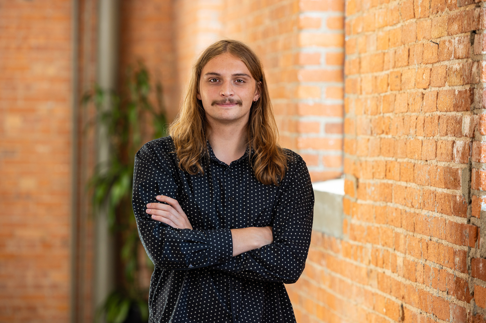

01
Modular Hydroponic Tower
A stackable, vertical growing system designed to maximize plant density per square foot of footprint. Each module nests onto the one below it, so the tower scales up without redesigning the base.
Mechanical engineer. Maker. Building things on purpose.
About

I'm a mechanical engineer at LaBella Associates in Rochester, NY, where I design HVAC systems for K-12 schools — load calcs, equipment selection, ductwork, and the unglamorous work of keeping buildings comfortable and code-compliant.
01
A stackable, vertical growing system designed to maximize plant density per square foot of footprint. Each module nests onto the one below it, so the tower scales up without redesigning the base.
02
A desk lamp built around a friction-jointed arm that holds any pose without a locking mechanism. The design problem was entirely in the joints — getting enough resistance to hold position under the lamp head's weight without making the arm stiff to move.
03
A mechanical answer to a warm drink: a device built to pull heat out of a can far faster than a refrigerator or ice bath.
04
A dash-mounted housing for a Raspberry Pi running a live OBD2 gauge cluster and Jellyfin music client, with a cutout sized to the touchscreen.
Also building
05
A two-axis CNC built from NEMA 17 steppers and GRBL firmware that draws any image onto a real Etch A Sketch. The hard part wasn't the hardware — it was the pathfinding: routing the pen through every dark pixel without ever crossing open space, since there's no way to "lift the pen" on a real Etch A Sketch.
06
A Raspberry Pi running Jellyfin over a personal music library, accessible from anywhere over Tailscale. Built a small FastAPI tool on top to search and pull new tracks straight into the library from the phone.
07
A Raspberry Pi mounted in the dash reading live engine data over Bluetooth from an OBD2 dongle, with a touchscreen kiosk interface for music and vehicle stats.